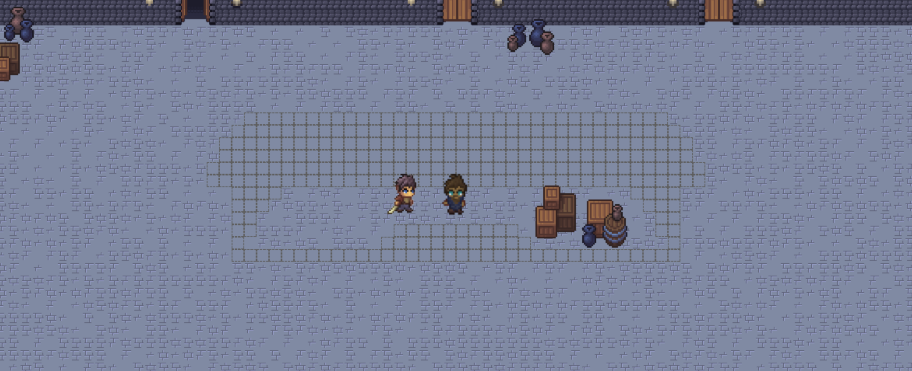
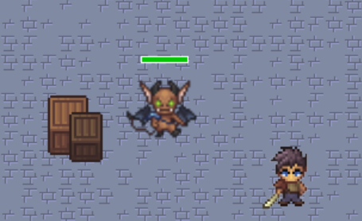

Un jeu incroyable vous attend
Télécharger le jeu✔ Compatible Windows 10 et 11 • 64 bits
RelicFall est un jeu d’action-aventure en 2D avec une vue de dessus, prenant place
dans un univers médiéval-fantastique sombre. Le jeu mélange exploration, combats,
énigmes, progression du personnage et coopération en multijoueur local.
Le joueur évolue à travers plusieurs donjons composés de salles interconnectées,
chacune proposant des ennemis, des mécanismes, des obstacles ou des objectifs
nécessaires à la progression.
Notre histoire prend place dans un village lointain autrefois reconnu pour la paix,
la joie et l’unité qui y régnaient. Pendant de nombreuses années, ce village fut
protégé par de puissantes reliques capables de repousser les attaques de monstres.
Cependant, un jour, les reliques disparurent mystérieusement. Privé de leur protection,
le village sombra dans le chaos et fut submergé par des créatures hostiles,
mettant brutalement fin à une longue ère de paix.
Peu de temps après, des traces des reliques disparues furent découvertes dans un mystérieux
donjon apparu récemment. De nombreux aventuriers s’y sont engouffrés, espérant traverser
ses salles, vaincre les monstres qui s’y cachent et récupérer les reliques perdues,
mais aucun n’en est jamais revenu victorieux.
En tant que joueur, vous devrez explorer les différents niveaux du donjon, affronter
des ennemis, résoudre des énigmes, coopérer avec d’autres joueurs,
améliorer vos compétences grâce au marchand et au système de progression,
puis récupérer les reliques afin de restaurer l’équilibre du monde.
RelicFall est un jeu vidéo d’action-aventure, inspiré des dungeon crawlers et de jeux d’exploration comme Zelda. Développé en Python avec la bibliothèque PyGame, le projet a été pensé comme une expérience coopérative complète mêlant exploration, combats, progression du personnage, énigmes et multijoueur dans un univers médiéval-fantastique sombre. Dès le début du développement, l’objectif n’était pas seulement de créer un jeu techniquement fonctionnel, mais aussi de construire un univers cohérent et immersif capable de proposer une véritable aventure structurée. Le joueur évolue à travers plusieurs donjons reliés entre eux, remplis de monstres, de mécaniques interactives, d’énigmes, de marchands et de reliques à récupérer afin de restaurer l’équilibre du monde.
Tout au long du développement, le projet est progressivement passé d’un prototype technique à une expérience de jeu beaucoup plus complète et aboutie. Les premières étapes se sont principalement concentrées sur les bases essentielles du jeu : les déplacements du joueur, le chargement des donjons, les collisions, les transitions entre les salles, les menus ainsi que l’architecture générale du moteur. Une fois ces fondations stabilisées, l’équipe a pu enrichir le gameplay avec de nombreuses fonctionnalités supplémentaires comme l’intelligence artificielle des ennemis, les mécaniques de combat, le système de compétences, les effets de lumière, les marchands, la synchronisation multijoueur ainsi qu’un level design plus complexe. Une attention particulière a également été portée à l’ambiance du jeu grâce aux graphismes en pixel art, à la conception des niveaux, à l’intégration sonore, à l’ergonomie des interfaces et au rythme de progression du joueur. Chaque donjon possède ainsi sa propre identité visuelle, ses mécaniques et ses énigmes afin de proposer une aventure variée et évolutive.
RelicFall représente également une expérience humaine et collaborative importante pour l’ensemble du groupe. Au-delà des aspects purement techniques liés à la programmation, le projet a demandé une organisation constante, une forte capacité d’adaptation et un véritable travail d’équipe afin de mener à bien un développement ambitieux en parallèle des autres contraintes scolaires. Le projet a mobilisé de nombreux domaines : programmation gameplay, intelligence artificielle, level design, réseau multijoueur, création graphique, interfaces utilisateur, recherche sonore et conception du site web de présentation. Malgré certaines limitations de temps et plusieurs fonctionnalités ambitieuses qui n’ont pas pu être entièrement finalisées, l’équipe est parvenue à produire un jeu cohérent, jouable et fidèle à la vision imaginée au départ. RelicFall constitue ainsi à la fois un projet vidéoludique complet et une démonstration concrète des compétences techniques, créatives et organisationnelles acquises tout au long du développement.



RelicFall a été réalisé par une équipe de cinq étudiants dans le cadre du projet EPITA. Chaque membre a contribué au développement du jeu à travers des domaines spécifiques tels que le gameplay, le multijoueur, le level design, les interfaces, les assets visuels et l’ambiance sonore.
Développement de l’architecture technique du jeu, du moteur du donjon, du système multijoueur LAN, des sauvegardes, des compétences, des effets de lumière et d’une partie importante de l’interface utilisateur.
Développement du gameplay principal : joueur, combats, animations, collisions, ennemis, intelligence artificielle, progression, marchand et développement du site web.
Conception des niveaux, des lobbys et des mécaniques de progression, création d’assets visuels, sprites joueurs, éléments de décor et structuration des environnements du jeu.
Création des menus, configuration des contrôles, recherche et intégration des musiques et effets sonores, ainsi que plusieurs assets graphiques du joueur.
Recherche et réflexion autour des monstres du jeu, participation à la construction du bestiaire et à la cohérence de l’univers de RelicFall.
Choisissez une version :
Télécharger le rapport complet du projet et de soutenance.
Télécharger le rapport PDF